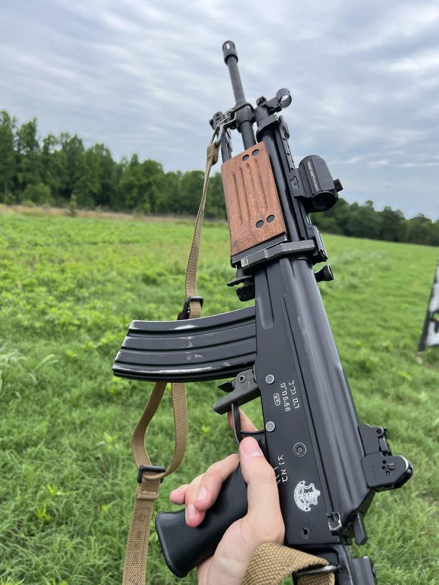
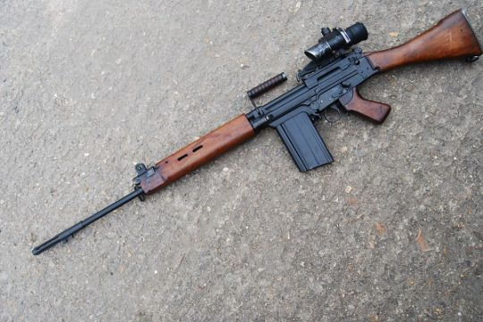

INITIALIZING NCC COMMAND PORTAL
0%
UNITY & DISCIPLINE — एकता और अनुशासन
Building strong moral foundations, ethical decision-making, and unwavering integrity in every cadet through rigorous training and mentorship.
Training India's future military officers and civil leaders — instilling command ability, strategic thinking and decisive action under pressure.
Igniting deep love for the motherland, fostering national integration and creating citizens willing to serve India in any capacity.
Forging bonds that last a lifetime across religion, region and language — because India's strength lies in her unity.
Explore the weapons of the NCC training system
→From L/CPL to SUO — climb the command ladder
→Enrolment process, eligibility and requirements
→Annual Training Camps, NIC, TSC and more
→A, B & C Certificate — your gateway to the forces
→The Largest Uniformed Youth Organisation in the World
The National Cadet Corps (NCC) was established on 16 April, 1948 under the National Cadet Corps Act of 1948. It emerged from the University Corps established during British rule in 1942, which was initially formed to train youth for military service during World War II.
After independence, visionary leaders recognized that India needed a trained, disciplined youth force that could serve the nation — both in military and civil capacities. The NCC was born with the motto "Unity and Discipline" (एकता और अनुशासन), a principle that continues to guide over 13 lakh cadets across all 29 states and 7 union territories.
The corps has three wings: Army Wing, Naval Wing, and Air Force Wing — each providing specialized training that prepares young Indians for service in the armed forces and beyond.
The largest wing of the NCC, the Army Wing trains cadets in drill, weapon handling, map reading, field craft and battle tactics. Cadets wear the distinctive olive green uniform with an army-pattern beret.
The Naval Wing exposes cadets to seamanship, boat pulling, sailing, swimming and naval engineering. Cadets get the unique opportunity to sail aboard INS vessels and experience life at sea.
The Air Force Wing is every aviation enthusiast's dream — cadets learn about aeronautics, radio communication, meteorology and even get opportunities for air experience flights in IAF aircraft.
NCC has produced some of India's most celebrated leaders — across the military, politics and public service.
India's first Field Marshal, Chief of Army Staff during the 1971 war — the man who turned East Pakistan into Bangladesh.
The Missile Man of India and beloved former President — an NCC cadet whose ambition and discipline shaped a nation's future.
First Indian woman to summit Mount Everest — her NCC training built the mental toughness to conquer the world's highest peak.
Former Chief of Air Staff of the Indian Air Force — his NCC days in the Air Force Wing were the launchpad for an illustrious career.
The Process That Transforms Students into Soldiers
Must be a regular student of a school or college affiliated with a recognised university or board
12 to 26 years for Junior Division / Wing and Senior Division / Wing cadets respectively
Medically fit as per the standards prescribed by a registered medical officer — no serious ailments
Indian citizen only. Citizens of Nepal and Bhutan enrolled in recognised institutions may also join
Collect the enrolment form from the ANO (Associate NCC Officer) or your institution's NCC unit. Fill in personal details, academic records and choose your preferred wing (Army / Navy / Air Force). Submit along with passport-sized photographs.
Submit: Aadhaar Card / Birth Certificate, Class 10th Marksheet, Bonafide Certificate from institution, Parent / Guardian Consent Form, Medical Fitness Certificate (from a MBBS doctor), Caste Certificate (if applicable for reservation), and 6 passport-size photographs.
A standardized physical fitness test to assess the cadet's baseline fitness. Don't worry — this is an entry-level test, not an army selection board. Train for 2–3 weeks before attempting.
A brief interview with the ANO to assess motivation, discipline, communication and patriotic intent. Be honest, speak with confidence and show genuine enthusiasm for national service. Common questions include: Why do you want to join NCC? What do you know about the Indian Armed Forces? Are you willing to attend camps?
→ Wear formal clothes. Sit straight. Give firm handshake.
→ Know the NCC motto, flag colours and your wing's history.
→ Express patriotism naturally — don't overdo it.
→ Ask one intelligent question at the end.
Upon selection, you will take the solemn NCC Pledge before the Commanding Officer. This is the official moment you become an NCC cadet. You will be issued your uniform, service number, and NCC identity card. Attend the first parade proudly — you have earned your place.
"I (name), sincerely promise that I will serve my Motherland honestly and faithfully, that I will abide by the rules and regulations of the National Cadet Corps, and that I will strive to become a worthy citizen of my country."
Master the Tools of Precision and Discipline
The NCC uses a carefully curated selection of infantry weapons for training purposes. Every cadet learns the fundamentals of safe weapon handling, firing positions and basic marksmanship — skills that build focus, confidence and discipline regardless of career path.

The .22 Deluxe Rifle is the entry weapon for every NCC cadet — the tool that introduces you to the discipline of marksmanship. Its low recoil and manageable noise make it perfect for beginners learning proper grip, breathing technique, trigger control and sight alignment.
Cadets fire this weapon on indoor and outdoor ranges, aiming for paper targets at 25–50 metres. A perfect score demands extraordinary concentration — building the mental discipline that translates directly to leadership and academic performance.
The .22 LR cartridge is the most widely used ammunition in the world — affordable, accurate and safe for training environments.

The INSAS (Indian Small Arms System) is the standard assault rifle of the Indian Armed Forces — a weapon designed and manufactured entirely in India by DRDO and the Ordnance Factory Board. It entered service in 1998, replacing the 7.62mm SLR.
Its distinctive translucent magazine, folding bipod and in-built grenade launching capability make it a versatile battlefield weapon. For NCC cadets, the INSAS represents advanced training — you handle, dismantle, reassemble and dry-fire this weapon, developing deep respect for the armed forces.
Made in India. Used by India. A symbol of indigenous defence capability.

The 7.62mm SLR (Self-Loading Rifle) is the battle rifle that won wars for India. Used extensively during the 1965 and 1971 Indo-Pakistani Wars, this weapon has legendary status in the Indian Army. The heavy 7.62mm round hits hard and flies far — making it a formidable long-range infantry weapon.
Indian soldiers who carried the SLR across the battlefields of Longewala, Shakargarh and Dhaka speak of its stopping power with reverence. For NCC cadets, learning the SLR means understanding the heritage of the Indian Army.
Though replaced by the INSAS in active service, the SLR continues to be used in training and ceremonial contexts — a testament to its enduring legacy.
Never point a weapon at anything you don't intend to shoot. Treat every weapon as if it's loaded — always. The safety drill is not a formality; it is a discipline of mind.
Your grip must be firm but not tense. The weapon should feel like an extension of your arm — balanced, controlled, natural. Practice dry grip daily.
Fire between heartbeats during the natural respiratory pause. Hold your breath partially — never fully — to steady your aim. Panic breathing = missed shots.
Front sight, rear sight and target must be in perfect alignment. Focus your eye on the front sight post — the target will naturally blur. Trust the technique.
Squeeze — never pull — the trigger with slow, even pressure using only the pad of your index finger. Jerking the trigger is the single most common cause of missed shots.
Maintain your sight picture and grip through the shot break and slightly after. Do not relax or anticipate the shot — the weapon must be steady at the moment of firing.
The Chain of Command — From Cadet to Commander
In the NCC, rank is not given — it is earned through consistent performance, exemplary discipline, leadership skills and dedication to the corps. Every rank comes with greater responsibility and greater honour.
The SUO is the apex of cadet leadership — a position of immense honour and equally immense responsibility. The SUO commands the entire cadet battalion, liaises directly with the Commanding Officer (Colonel), and represents the corps at RDC (Republic Day Camp) and other national events.
An SUO is expected to be a role model in every aspect — dress, conduct, academic performance, physical fitness and moral character. They mentor all junior ranks and are the visible face of the unit's excellence.
The JUO commands an entire company of cadets (typically 3–4 platoons, ~120-160 cadets). This rank is awarded to exceptional SGTs who demonstrate outstanding leadership potential. JUOs plan and execute major parades, camps and ceremonial events alongside the ANO.
The Sergeant is a pivotal rank in the NCC hierarchy. As Platoon Leader, the SGT is responsible for the training, welfare and discipline of an entire platoon. They train junior cadets in drill movements, weapon handling procedures and field craft exercises.
SGTs are the backbone of every parade — their commands synchronize the movements of dozens of cadets. They also lead the platoon during Annual Training Camps (ATC) and are frequently nominated for specialist camps like the Thal Sainik Camp.
The Corporal commands a section — the basic tactical unit. CPLs are responsible for the day-to-day training, discipline and welfare of their 8-10 cadets. They conduct early morning PT drills, check uniform standards and report to the Sergeant.
The CPL rank develops strong management skills — the ability to motivate a small team, resolve conflicts and maintain standards under pressure are lessons that last a lifetime far beyond the corps.
The Lance Corporal is the first rung of the leadership ladder. Awarded after consistent performance in parades, weapon training and general conduct, this rank is your corps' way of saying: "We see potential in you."
L/CPLs assist the Corporal in managing their section, lead small groups during physical training, and begin to take responsibility for the conduct of junior cadets. It's the hardest transition — from being led to starting to lead.
Every great officer was once a Cadet. The Cadet rank is where you learn the fundamentals — how to stand at attention, how to salute, how to wear a uniform with pride, how to fire a weapon safely, how to march in perfect synchrony with your platoon.
Being a Cadet means being a student of discipline — observing the senior ranks, absorbing their techniques, and beginning to develop the mindset that separates a soldier from a civilian. Every legend started here.
Above the cadet ranks is the officer structure — permanent commissioned officers who guide and command the NCC units.
Commands the entire NCC Battalion / Group. Ultimately responsible for all training, discipline and administrative matters.
The ANO is the primary officer you interact with as a cadet. They conduct parades, manage administration and mentor senior cadets.
Retired service personnel who provide specialized weapon training, drill instruction and field craft expertise.
Where Training Meets Adventure
NCC camps are where the real magic happens. Away from the parade ground and into the field — cadets develop resilience, teamwork, adaptability and memories that last a lifetime. Every camp is a crucible that reveals character.
The pinnacle of NCC achievement. Selected cadets from every directorate march past the President of India at Rajpath / Kartavya Path. This is not just a parade — it is a national honour awarded to India's finest cadets. Preparation spans 3–4 months of intensive training. Being an RDC cadet changes you forever.
The mandatory Annual Training Camp runs for 10 days and covers weapon training, obstacle courses, map reading, first aid, cross-country marches and leadership exercises. This camp is required for Certificate examinations.
A competitive camp where the best Army Wing cadets from all 17 directorates compete in weapon training, obstacle race, cross-country, drill and general knowledge. TSC winners are selected for the prestigious RDC contingent.
The naval equivalent of TSC — naval wing cadets compete in seamanship, boat pulling, swimming, rowing and shipboard knowledge. Selected cadets get a chance to sail aboard INS vessels — an experience few civilians ever have.
Air Force wing cadets get to experience life at an IAF station — watching fighters, attending ATC briefings, learning about aircraft systems and potentially experiencing air experience flights in military aircraft. For aviation enthusiasts, this is the dream.
The NIC brings together cadets from all 17 directorates to live, train and celebrate together — breaking barriers of language, religion and region. Cultural nights, inter-state sports, folk dance performances and joint adventures make this the most emotionally transformative NCC experience.
NCC cadets don't just train — they serve. The NCC's social service wing has made a measurable difference in communities across India.
Your Passport to India's Armed Forces
NCC Certificates (A, B and C) are among the most valuable qualifications a young Indian can obtain. They provide direct advantages in UPSC, SSB interviews, government jobs and university admissions — a documented proof of discipline, service and leadership.
Cadet must have completed 75% attendance in all parades and training activities. Must have attended at least one Annual Training Camp.
Senior cadet with minimum 75% attendance, holder of 'A' Certificate (preferred), completion of at least two Annual Training Camps.
Holder of 'B' Certificate, minimum 2 years in Senior Division, 75%+ attendance, attended at least 3 training camps including one national-level camp.
History, formation, growth, structure, aims, motto, flag, organisation of the NCC. Roles of DG NCC, Directorate, Group HQ and Battalion levels.
Attention, Stand at Ease, Slow March, Quick March, Saluting, Forming Fours, Dressing, About Turn, Right/Left Turn and ceremonial drill movements.
Names of parts, mechanism, loading, unloading, firing positions, stoppages and clearing for .22 Deluxe Rifle, INSAS and 7.62mm SLR.
Types of maps, conventional signs, scale, marginal information, relief features, north-finding methods, compass use and six-figure grid references.
Observation, judging distance, use of ground, movement, camouflage and concealment, section formation and fire control orders.
Basic first aid, DRABC protocol, treatment of wounds, fractures, burns, heat stroke, snake bite, CPR basics and bandaging techniques.
Captured Moments of Discipline and Pride
A visual documentation of the NCC training armoury and the culture of discipline

Traditional & Tactical Variants — The cadet's first weapon

India's standard assault rifle — advanced cadet training

The battle-proven Self Loading Rifle — a legacy weapon
The Lion Capital of Ashoka — National Emblem of India

This NCC Command Portal is a comprehensive digital resource designed to educate, inspire and inform students about the National Cadet Corps — India's premier youth development organisation. Built with passion for the corps and commitment to web excellence.